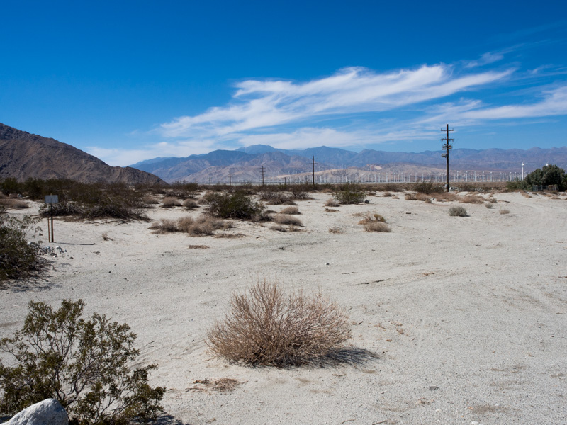

Above the Clouds
2014-09-27T15:49:00-0700
- Driving back to Los Angeles from Big Bear, we stopped off to take in the majestic view.
Grasshopper
2014-09-27T15:49:00-0700

- This green guy/girl was hanging-out perched a door frame in our apartment complex.
A Postcard Julian, CA
2014-09-27T15:11:00-0700
- Julian California USA is an old mining town located about 50 miles north-east of San Diego, CA.
- In the Early part of the 1900's, Julian recived some Blue ribbon awards for their apples.
- Nowadays its a little tourist town know for their apple pies. A little bit of America right there if you as me.
- "This is the best apple pie I've ever had" - TC
A Postcard from Palm Springs, CA
2014-09-06T17:58:00-0700

104°F in the afternoon
100°F in the evening